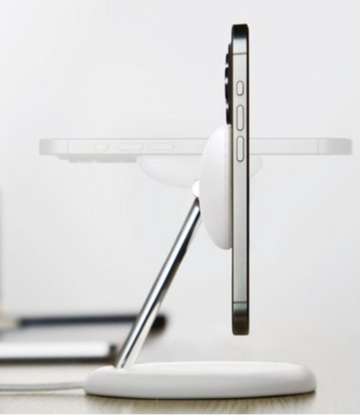
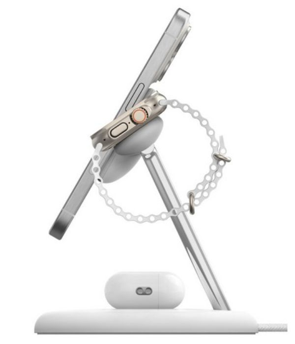
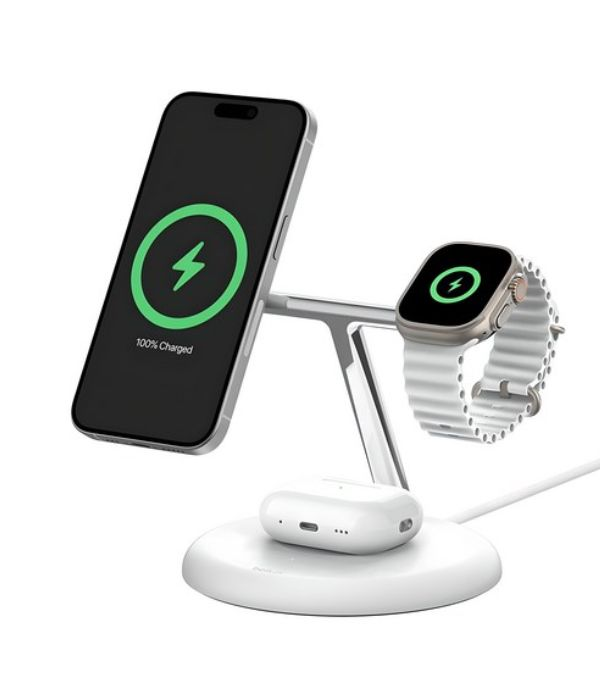

공간을 지배하는 미니멀리즘 오브제, 차세대 Qi2 15W 무선 충전의 기준 | 벨킨 3-in-1
단순한 충전 스탠드를 넘어 프리미엄 데스크테리어의 정점을 찍는 시각적 오브제, 벨킨 3-in-1 Qi2 스탠드는 공간의 가치를 높이는 독보적인 건축학적 외관을 자랑합니다. 스마트폰, 애플워치, 무선 이어폰을 단 하나의 스탠드 위로 완벽하게 통합하여 복잡한 케이블 엉킴을 원천적으로 제거합니다. 차세대 오픈형 글로벌 충전 표준인 **Qi2 아키텍처**를 완벽하게 탑재하여, 기존 맥세이프 전용 고가 충전기에서만 가능했던 **15W 초고속 마그네틱 무선 충전**을 완벽한 안전성 속에서 지원합니다. 스탠드를 바라보는 각도마저 예술이 되는 하이엔드 테크 가젯입니다.



모바일 생태계의 발전과 기기의 다변화는 현대인의 책상 위를 수많은 충전 어댑터와 복잡한 케이블 선들로 오염시키는 결과를 초래했습니다. 단순한 전력 공급을 넘어 공간의 미니멀리즘을 추구하는 유저들에게 충전 장치는 기능성 하드웨어인 동시에 시각적 만족감을 주는 인테리어 소품이어야 합니다. 글로벌 서드파티 하이엔드 테크 브랜드의 명가 벨킨(Belkin)이 제시하는 부스트차지 프로 3-in-1 Qi2 무선 충전 스탠드는, 기존 시장의 플라스틱 저가형 제품군을 압도하는 정교한 마감과 차세대 무선 충전 표준 프로토콜을 완벽하게 융합한 플래그십 오거나이저 기어입니다.
벨킨 3-in-1 스탠드의 핵심 기술적 진보는 세계무선충전협회(WPC)가 규정한 차세대 충전 규격 'Qi2'의 정밀한 해석에 있습니다. Qi2는 애플의 맥세이프(MagSafe) 기술을 기반으로 개발된 자석 정렬형 충전 메커니즘인 '마그네틱 파워 프로필(Magnetic Power Profile)'을 탑재하고 있습니다. 이를 통해 스마트폰을 충전 패드 근처에 가져가는 것만으로 내부 코일이 1mm의 오차도 없이 자석식으로 초정밀 밀착 고정됩니다. 이 완벽한 물리적 얼라인먼트는 전력 전송 과정에서 발생하는 에너지 손실과 발열을 혁신적으로 억제하여, 배터리 수명을 보호함과 동시에 아이폰 및 Qi2 호환 디바이스에 최대 15W의 압도적인 초고속 무선 충전 전류를 안전하게 다이렉트로 공급합니다.
단순한 외형적 아름다움을 넘어 유저의 사용 시나리오를 심층 분석한 인체공학적 레이아웃 또한 돋보입니다. 우측 날개 부분에는 최신 애플워치(Apple Watch) 시리즈의 급속 충전 규격을 지원하는 전용 모듈이 빌트인되어 있어 짧은 시간 안에 워치를 완전히 리차징합니다. 하단 베이스는 에어팟 등의 무선 이어폰을 위한 최적의 음각 홈 디자인과 충전 유무를 정밀하게 알려주는 LED 인디케이터가 매칭되었습니다. 스마트폰이 거치되는 상단 각도는 사용자가 책상에 앉았을 때 알림을 가장 직관적으로 확인하고 페이스 ID(Face ID) 잠금 해제를 즉시 처리할 수 있는 최적의 시야각으로 고정되어 있으며, 가로 거치 시 iOS의 스탠드바이(Standby) 기능을 완벽하게 지원해 스마트 탁상시계 및 위젯 스크린으로 유기적 전환이 가능합니다.
벨킨 한국 공식 수입원 지티기어 정품 라인업을 통해 완벽한 2년 AS 보증 및 한정 수량 단독 혜택을 즉시 확인하세요.
국내 정품 최저가 혜택 확인하기